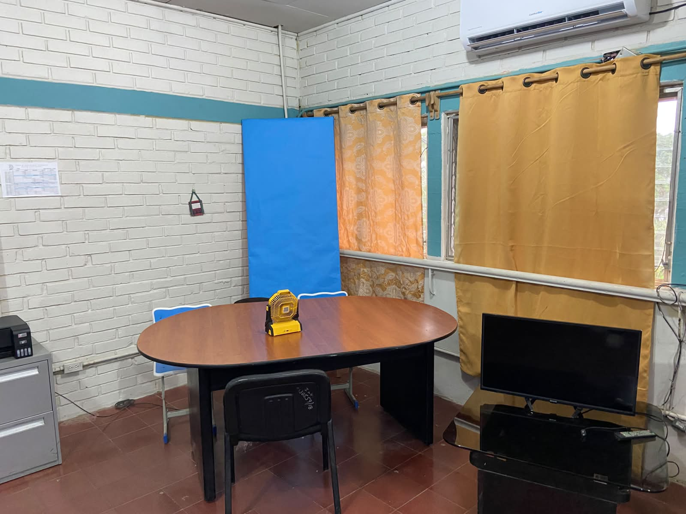

Contaduría y Finanzas
Esta especialidad capacita a los estudiantes en la elaboración de libros contables, registro de operaciones comerciales, cálculo de impuestos y preparación de estados financieros conforme a las leyes fiscales vigentes.
Competencias Principales:
• Registro y control de operaciones contables empresariales.
• Elaboración de estados financieros y balances de comprobación.
• Gestión de planillas, deducciones y obligaciones tributarias.
• Aplicación de sistemas contables computarizados y auditoría básica.
Campo Laboral:
Despachos contables, departamentos de contabilidad de empresas públicas y privadas, auditoría interna, gestión fiscal, inventarios y consultoría financiera independiente.
